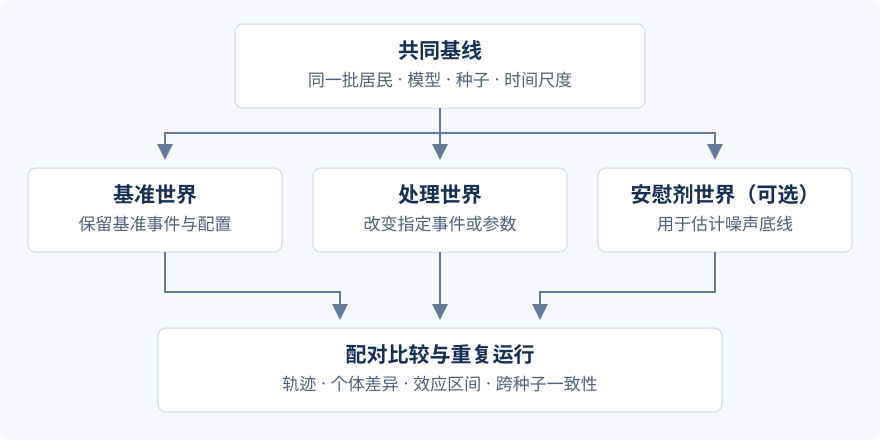

平行世界与对照实验¶
平行世界让同一批居民在不同事件或配置下运行，再按居民配对比较结果。本章沿用 研究工作台 的补贴通告例子，手动建立三个条件，说明实验文件和报告字段。
先准备教程小城的 8 位居民和可用的仿真模型。手动平行世界适合探索条件差异；需要事先保存假设、阈值和跨种子判定时，使用研究协议。


各条件共享居民输入与基础配置，分别保存运行输出。¶
1. 建立三个条件¶
打开 研究工作台 → 平行世界 · 反事实推断，设置居民 1–8、3 天、种子 42、快速模式关闭、并行数 1，再建立以下世界：
世界 ID / 角色 |
第 2 天 09:00 的事件 |
|---|---|
|
无新增事件 |
|
租金补贴通告：市政部门宣布为低收入家庭提供租金补贴。 |
|
例行通告：市政部门发布办公时间未发生变化的例行通告。 |
本例的处理是通告文本。要研究补贴到账，还需配置相应支付机制并检查账本。
一次实验支持 2–8 个世界；“并行数”控制同时执行的进程数。运行器为各条件建立独立输出目录，从共同的居民输入启动。实验世界与团队账号中的个人世界分别管理，见 核心概念。
2. 保存配置并启动¶
本例的完整配置可下载为 worlds.json。在完成模型配置的本地工作区执行：
gaworld parallel-worlds --spec worlds.json
命令会启动实际仿真并调用模型。CLI 读取当前本地配置；运行前确认当前城市包含文件中的居民编号。网页中的账号世界通过会话选择，详见 模型与配置。
字段 |
本例值及含义 |
|---|---|
|
|
|
|
|
|
|
|
|
|
|
各条件的 ID、角色、事件及可选配置补丁 |
网页运行时点击 运行平行世界，等待所有条件完成。命令行运行时查看进程输出和实验目录中的 experiment.json。要用种子 43 重复，另存一份配置并修改 seed，保持其他输入相同。
快速模式与长时段快进¶
模式 |
改变什么 |
适用场景 |
|---|---|---|
平行世界 |
启用确定性认知，跳过每日总结和日记 |
检查实验调度与输出格式 |
仿真 |
以每日简报推进，跳过日内 tick 循环 |
长时间跨度仿真 |
比较不同条件时保持执行模式一致。本例关闭快速模式，教学报告的读取练习则可以直接使用下文的下载文件。
3. 找到各世界输出¶
output/parallel_worlds/<实验目录>/
├── experiment.json # 输入、条件、各世界状态和输出路径
├── report.json # 轨迹比较与配对估计
├── divergence_summary.md # 差异摘要
└── … # 各世界的独立运行输出
在 experiment.json 的 worlds 中查找每个条件的 state_csv，再读取对应状态历史。这样可以直接定位输出，不依赖对目录名称的猜测。
4. 读懂一份配对报告¶
下载 种子 42 的教学报告。它由 GAWorld 对合成 CSV 计算生成，输入和生成脚本见 研究工作台。本例每个居民有 6 条 stress 记录，事件后的比较从 event_step=2 开始。
字段 |
教学报告数值 |
如何理解 |
|---|---|---|
|
8 |
参与配对的居民数 |
|
−0.100 |
事件后，处理组相对基准组的平均差值 |
|
−0.1065 / −0.0935 |
按居民重采样得到的区间 |
|
0.0078125 / 0.0078125 |
配对检验值与多重比较校正值 |
|
0 |
事件前两组没有差异 |
|
−0.100 |
处理前后变化的组间差异 |
|
0.005 |
安慰剂条件提供的差异参照 |
|
|
当前配对规则对这组教学输入的判定 |
先看事件前是否可比，再看事件后效应的方向、区间与安慰剂差异；最后检查不同种子的结果。ate 使用事件后的记录，而研究协议中的 aggregation: final 使用最后一条记录，两种汇总在真实运行中可能不同。
CSV 的 step 是状态记录序号。分析器根据运行天数和记录长度估算每天的记录数，再定位事件，event_step 应与本次报告及轨迹一起核对。记录序号与仿真日的对应见 结果字段。
网页中的分叉图显示各世界何时偏离基准；“谁被改变了”用于追溯个体差异；异质性分析用于比较不同居民属性。图中的明显分叉需要结合相同居民、事件时间与数值报告阅读。
5. 改成自己的实验¶
事件字段用于改变居民接收到的情境；配置补丁用于改变执行机制。例如调整个税起征点：
{
"label": "低起征点世界",
"events": [],
"config": {"economy": {"tax": {"monthly_exemption": 3000}}}
}
参数扫描可把数值配置项的多个取值转成“基准世界 + 各剂量世界”。生成扫描世界会替换当前列表，先保存需要保留的设计。正式比较时保存居民输入、公共设置、各条件补丁和代码版本。
配置如何变成报告¶
normalize_experiment() 把 worlds.json 转为 ExperimentSpec；prepare_experiment() 写出 manifest 和各条件路径。运行器合并基础配置与各世界的补丁，限制并行数并启动独立进程。analysis.py 按 manifest 读取 CSV，causal.py 按居民对齐基准与处理记录，最后将轨迹和配对结果写入 report.json。
完整字段见仓库的 平行世界说明。
代码结构与执行流程¶
模块分工¶
源码位置 |
职责 |
|---|---|
平行世界页面：编辑条件、扫描参数、启动与读取结果。 |
|
预览设计，组织实验运行，返回报告与跨种子结果。 |
|
定义实验与世界配置，并规范化输入。 |
|
将数值参数的多个取值转换为实验世界。 |
|
准备各世界目录，调度独立仿真进程并写入报告。 |
|
读取状态历史，比较轨迹、分歧和个体变化。 |
|
计算配对效应、区间、检验、异质性及重复实验汇总。 |
执行流程¶
世界条件 / 参数扫描 → ExperimentSpec → prepare_experiment()
→ ExperimentRunner → 各世界独立运行
→ analysis 轨迹比较 + causal 配对估计 → 保存报告
每个世界使用独立进程和输出目录，运行器控制同时执行的数量。analysis 从各世界的状态历史构造时间序列与个体变化；causal 按居民配对计算条件差异，并在实验内进行多重检验校正。API 层组织多个种子的运行与汇总。
从哪里修改¶
修改条件字段查看 spec.py，修改参数扫描查看 sweep.py，修改进程调度查看 runner.py。增加比较指标或统计量时，核对 analysis.py、causal.py 及前端对应展示。